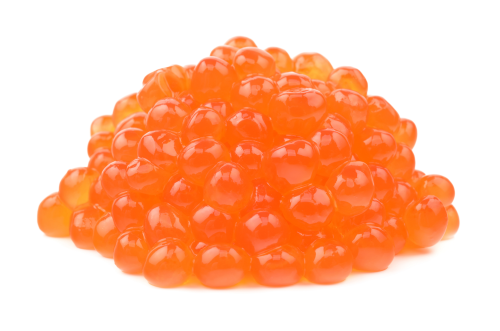
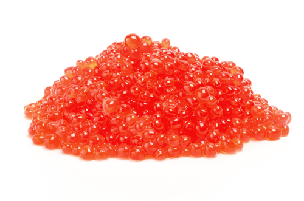
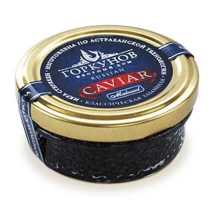
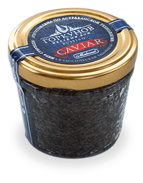
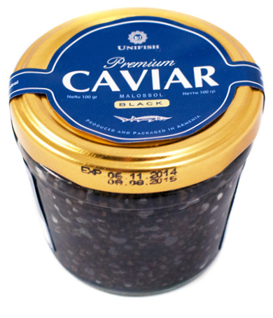
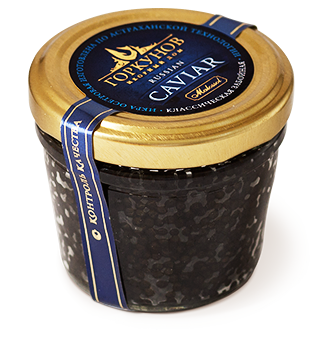
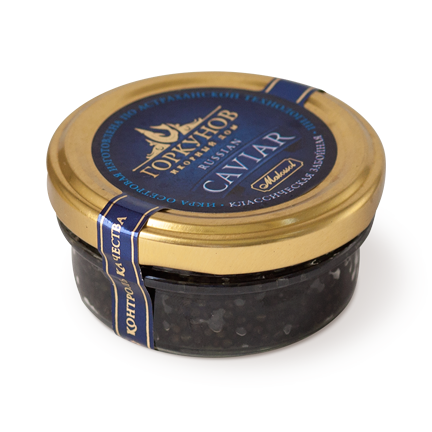
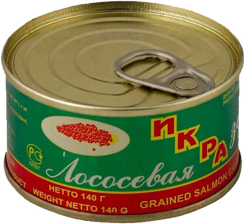

Икра кеты красная
320 / 100 г.
Состав: Икра зернистая, масло растительное, соль, консерванты Е200, Е211.
Пищевая ценность на 100г.: Белок - 32 г, жиры - 14 г, кальций - 90 мг, магний - 29 мг, фосфор - 490 мг, железо - 1800 мкг, витамин А - 0,5 мг, калорийность - 250 ккал.
Срок годности: 6 месяцев при температуре от -4 до -6С, 1 месяц при температуре от +2 до +6С. После вскрытия упаковки хранить в холодильнике не более 7 суток.
Упаковка: Пластиковая банка.
Вылов: Россия, Сахалин.

Икра горбуши красная
330 / 100 г.
Состав: Икра зернистая, масло растительное, соль, консерванты Е200, Е211.
Пищевая ценность на 100г.: Белок - 32 г, жир - 13 г, В1 - 0,2 мг, В2 - 3 мг, калорийность - 263 ккал.
Срок годности: 6 месяцев при температуре от -4 до -6С, 1 месяц при температуре от +2 до +6С. После вскрытия упаковки хранить в холодильнике не более 7 суток.
Упаковка: Пластиковая банка.
Вылов: Россия, Сахалин.

Икра стерляди черная, забойная
1850 / 50 г.
Состав: Икра стерляди, соль (3,0 - 3,8 %), комплексная пищевая добавка Варэкс-11.
Пищевая ценность на 100г.: Белок-28 г, жир-14 г, калорийность-238 ккал
Срок годности: 8 месяцев. Хранить при температуре от -4 до +4 °С
Икра непастеризованная. Упакована под вакуумом.

Икра стерляди черная
3840 / 100 г.
Состав: Икра стерляди, соль (3,0 - 3,8 %), комплексная пищевая добавка Варэкс-11.
Пищевая ценность на 100г.: Белок-28 г, жир-14 г, калорийность-238 ккал
Срок годности: 8 месяцев. Хранить при температуре от -4 до +4 °С
Икра непастеризованная. Упакована под вакуумом.

Икра осетровая черная
3550 / 100 г.
Состав: икра осетра, соль (3,0 - 3,8 %), комплексная пищевая добавка Варэкс-11.
Пищевая ценность на 100г.: Белок — 28 г., жир — 14 г., калорийность — 238 ккал
Срок годности: 8 месяцев. Хранить при температуре от -4 до +4 °С
Икра непастеризованная. Упакована под вакуумом.

Икра осетровая черная, забойная
4200 / 100 г.
Состав: икра осетра, соль (3,0 - 3,8 %), комплексная пищевая добавка Варэкс-11.
Пищевая ценность на 100г.: Белок — 28 г., жир — 14 г., калорийность — 238 ккал
Срок годности: 8 месяцев. Хранить при температуре от -4 до +4 °С
Икра непастеризованная. Упакована под вакуумом.

Икра осетровая черная, забойная
1800 / 50 г.
Состав: Икра осетра, соль (3,0 - 3,8 %), комплексная пищевая добавка Варэкс-11.
Пищевая ценность на 100г.: Белок — 28 г., жир — 14 г., калорийность — 238 ккал
Срок годности: 8 месяцев. Хранить при температуре от -4 до +4 °С
Икра непастеризованная. Упакована под вакуумом.

Икра осетровая черная
1750 / 50 г.
Состав: Икра осетра, соль (3,0 - 3,8 %), комплексная пищевая добавка Варэкс-11.
Пищевая ценность на 100г.: Белок — 28 г., жир — 14 г., калорийность — 238 ккал
Срок годности: 8 месяцев. Хранить при температуре от -4 до +4 °С
Икра непастеризованная. Упакована под вакуумом.

Икра лососевая красная
260 / 50 г.
Состав: Икра, соль, масло растительное, влагоудерживающий агент Е422, консерванты Е200, Е211.
Пищевая ценность на 100г.: Белки - 30г, жиры - 11г, витамины А - 0,25 мг, В1 - 0,50 мг, В2 - 0,4 мг, РР - 1,4 мг, калорийность - 230 ккал.
Срок годности: 12 месяцев при температуре от -4 до -6 С, 3 месяца при температуре от +2 до +6 С. После вскрытия упаковки хранить в холодильнике не более 7 суток.
Упаковка: Жестяная банка.